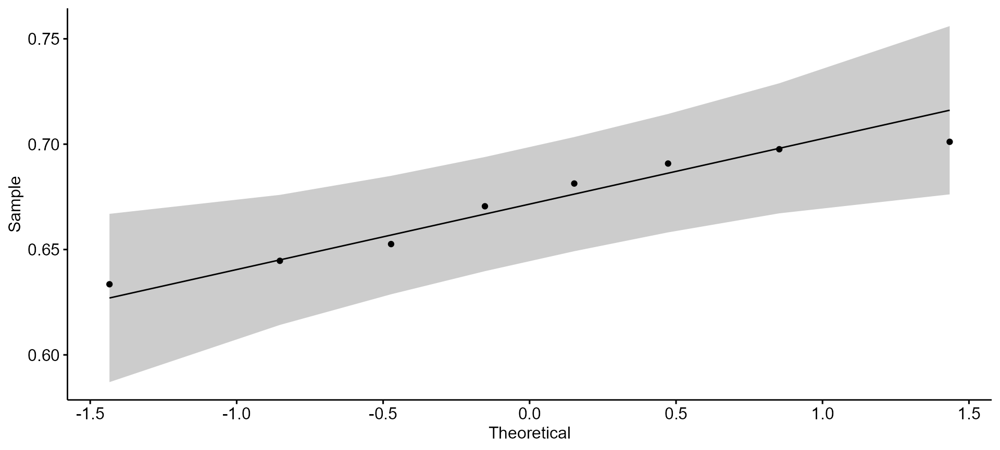
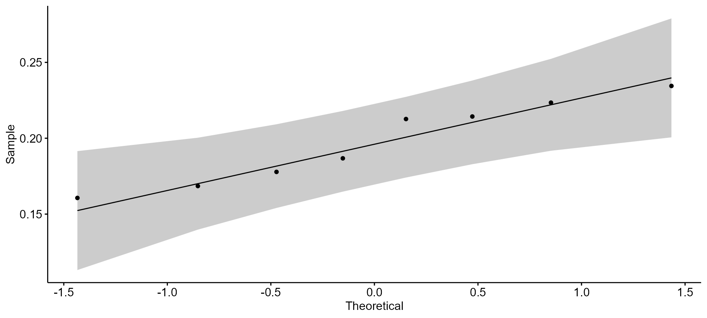
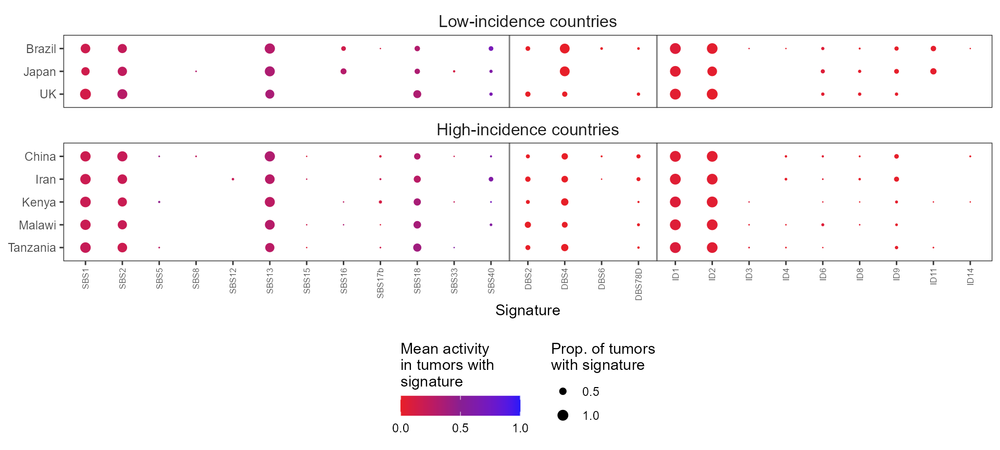
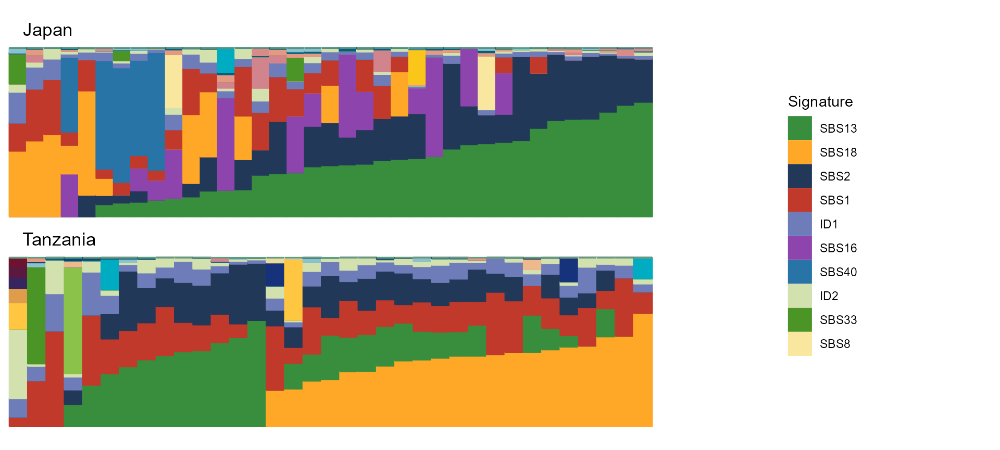
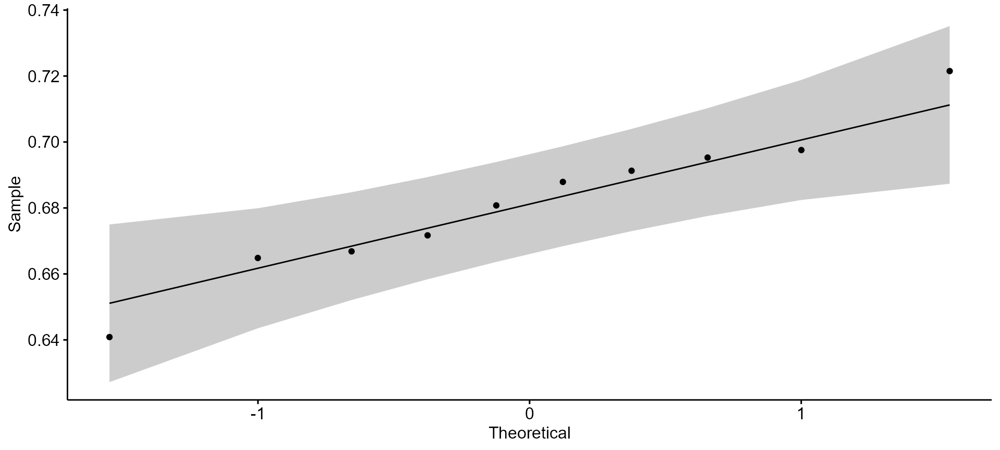
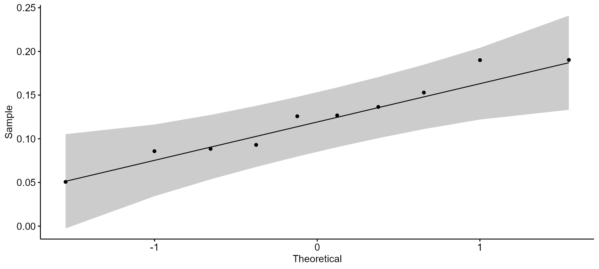
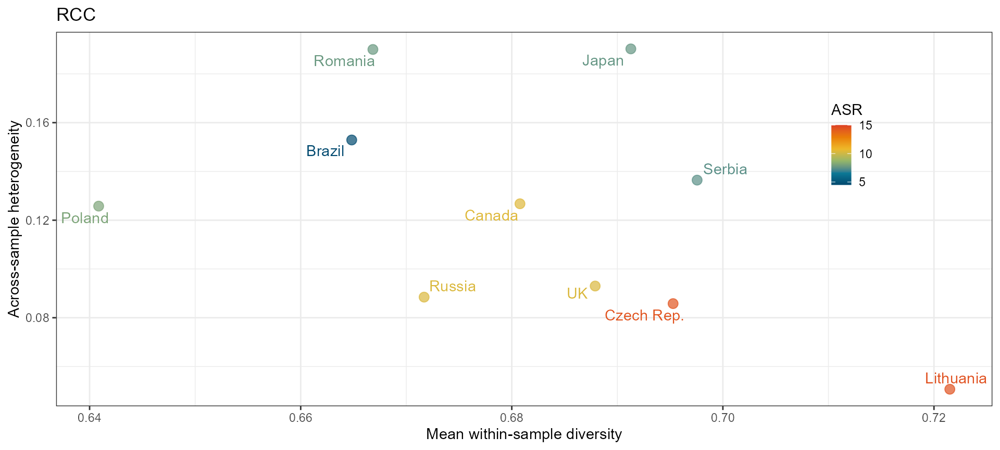
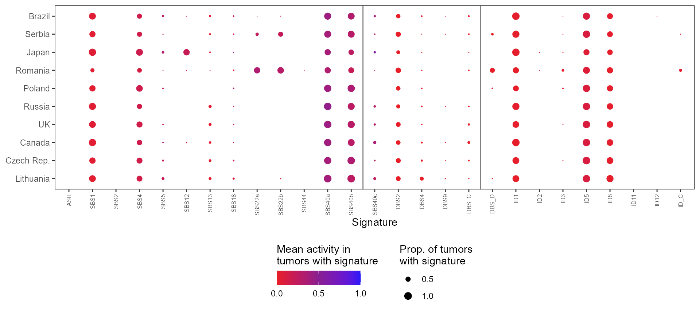
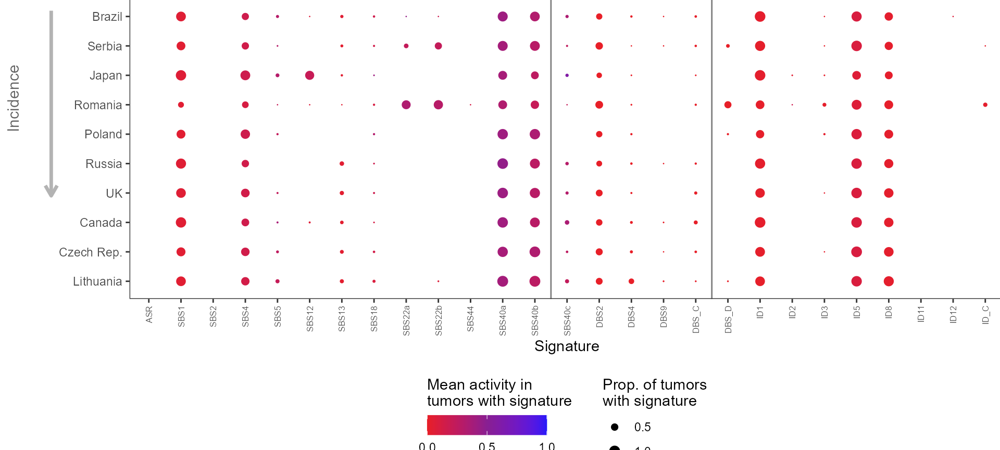
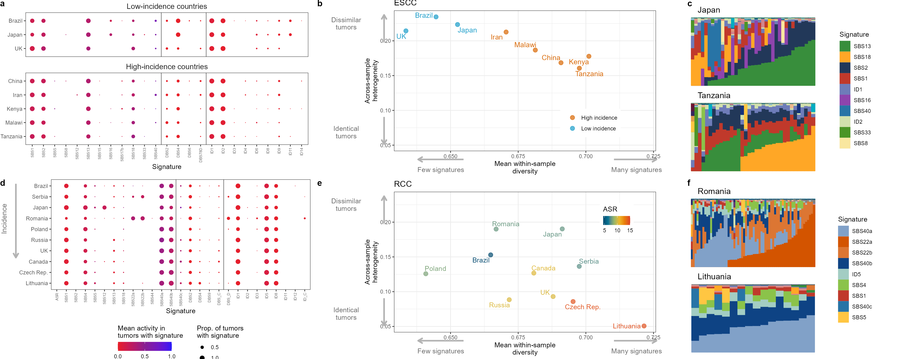

sigvar analysis of Mutographs data
Global distributions ESCC and RCC mutational signatures
Maike Morrison
2023-12-15
Source:vignettes/geography_incidence_figure.Rmd
geography_incidence_figure.RmdESCC data
ESCC_sig_activity_long = tidyr::pivot_longer(ESCC_sig_activity,
-c(Country, Incidence_Level,
Sample),
names_to = "Signature", values_to = "Abundance") %>%
## Label signatures by their type
mutate(Sig_Type = ifelse(stringr::str_detect(Signature, "SBS"), "SBS",
ifelse(stringr::str_detect(Signature, "DBS"), "DBS",
ifelse(stringr::str_detect(Signature, "ID"),
"ID",
ifelse(stringr::str_detect(Signature,
"SV"),
"SV", "Other")))),
.after = Signature) %>%
## Add abundance of each signature relative to all other signatures for each subject
group_by(Sample) %>% mutate(Rel_Abundance_all = Abundance/sum(Abundance)) %>%
## Add abundance of each signature relative to other sigs *of the same type* for each subject
group_by(Sample, Sig_Type) %>%
mutate(Rel_Abundance_sig_type = Abundance/sum(Abundance)) %>%
ungroupPlot: All signatures within-sample vs. between-sample variability
all_sigs = colnames(ESCC_sig_activity)[-c(1:3)]
escc_stats = sigvar::sigvar(sig_activity = ESCC_sig_activity,
K = length(all_sigs), group = "Country") %>%
mutate(incidence = ifelse(Country %in% c("UK", "Japan", "Brazil"),
"Low incidence", "High incidence"))
escc_scatter <-
ggplot(escc_stats,
aes(x = mean_within_sample_diversity,
y = across_sample_heterogeneity )) +
# geom_smooth(method = "lm", color = "#BEBEBE",
# fill = "#BEBEBE", alpha = 0.3) +
# ggpubr::stat_cor() +
# ggpubr::stat_regline_equation(label.y = 0.208,
# aes(label = paste( ..adj.rr.label..))) +
geom_point(aes(color = incidence #`ASR (World)`, shape = incidence
), size = 3, alpha = 0.7) +
# ggrepel::geom_text_repel(aes(label = Country, color = incidence),
# show.legend = FALSE, size = 4, force_pull = 0) +
theme_bw() +# theme(legend.position = "none") +
xlab( "Mean within-sample diversity") +
ylab("Across-sample heterogeneity") +
# scale_color_gradientn(colors = PNWColors::pnw_palette("Bay", 6)) +
scale_color_manual(values = c("#D86600", "#199CC9"),
name = "Incidence\nlevel") +
ylim(0.132, 0.21) +
theme(#legend.position = "none",# c(0.3, 0.15), # c(0.7, 0.88),
# panel.grid = element_blank(),
legend.background = element_blank()) +
#element_rect(color = "#E3E3E3", linewidth = 1)) +
guides(color = guide_legend(direction = "vertical",
title.position = "left", title.vjust = 0.75)) +
ggtitle("ESCC")
summary(lm(across_sample_heterogeneity ~ mean_within_sample_diversity,
escc_stats))
#>
#> Call:
#> lm(formula = across_sample_heterogeneity ~ mean_within_sample_diversity,
#> data = escc_stats)
#>
#> Residuals:
#> Min 1Q Median 3Q Max
#> -0.019309 -0.010741 0.003421 0.009444 0.014397
#>
#> Coefficients:
#> Estimate Std. Error t value Pr(>|t|)
#> (Intercept) 0.8389 0.1349 6.218 0.000799 ***
#> mean_within_sample_diversity -0.9554 0.2008 -4.758 0.003131 **
#> ---
#> Signif. codes: 0 '***' 0.001 '**' 0.01 '*' 0.05 '.' 0.1 ' ' 1
#>
#> Residual standard error: 0.01355 on 6 degrees of freedom
#> Multiple R-squared: 0.7905, Adjusted R-squared: 0.7556
#> F-statistic: 22.64 on 1 and 6 DF, p-value: 0.003131
# summary(glm(across_sample_heterogeneity ~ incidence, escc_stats, family = "binomial"))
# summary(glm(mean_within_sample_diversity~ incidence, escc_stats, family = "binomial"))
cor.test(x = escc_stats$across_sample_heterogeneity ,
y = escc_stats$mean_within_sample_diversity)
#>
#> Pearson's product-moment correlation
#>
#> data: escc_stats$across_sample_heterogeneity and escc_stats$mean_within_sample_diversity
#> t = -4.7585, df = 6, p-value = 0.003131
#> alternative hypothesis: true correlation is not equal to 0
#> 95 percent confidence interval:
#> -0.9798667 -0.4938647
#> sample estimates:
#> cor
#> -0.8891142
# # https://www.statology.org/point-biserial-correlation-r/
# Are things normal?
ggpubr::ggqqplot(escc_stats$mean_within_sample_diversity)
ggpubr::ggqqplot(escc_stats$across_sample_heterogeneity)
t.test(x = filter(escc_stats,
incidence == "High incidence")$across_sample_heterogeneity,
y = filter(escc_stats,
incidence == "Low incidence")$across_sample_heterogeneity,
alternative = "less")
#>
#> Welch Two Sample t-test
#>
#> data: filter(escc_stats, incidence == "High incidence")$across_sample_heterogeneity and filter(escc_stats, incidence == "Low incidence")$across_sample_heterogeneity
#> t = -3.997, df = 5.9615, p-value = 0.003619
#> alternative hypothesis: true difference in means is less than 0
#> 95 percent confidence interval:
#> -Inf -0.02197195
#> sample estimates:
#> mean of x mean of y
#> 0.1812759 0.2240835
t.test(x = filter(escc_stats,
incidence == "High incidence")$mean_within_sample_diversity,
y = filter(escc_stats,
incidence == "Low incidence")$mean_within_sample_diversity,
alternative = "greater")
#>
#> Welch Two Sample t-test
#>
#> data: filter(escc_stats, incidence == "High incidence")$mean_within_sample_diversity and filter(escc_stats, incidence == "Low incidence")$mean_within_sample_diversity
#> t = 5.6916, df = 5.3611, p-value = 0.0009282
#> alternative hypothesis: true difference in means is greater than 0
#> 95 percent confidence interval:
#> 0.02910522 Inf
#> sample estimates:
#> mean of x mean of y
#> 0.6882793 0.6435818
cor.test(x = escc_stats$across_sample_heterogeneity ,
y = as.numeric(escc_stats$incidence == "High incidence"), method = "spearman")
#>
#> Spearman's rank correlation rho
#>
#> data: escc_stats$across_sample_heterogeneity and as.numeric(escc_stats$incidence == "High incidence")
#> S = 154.99, p-value = 0.008237
#> alternative hypothesis: true rho is not equal to 0
#> sample estimates:
#> rho
#> -0.8451543
cor.test(x = escc_stats$mean_within_sample_diversity,
y = as.numeric(escc_stats$incidence == "High incidence"), method = "spearman")
#>
#> Spearman's rank correlation rho
#>
#> data: escc_stats$mean_within_sample_diversity and as.numeric(escc_stats$incidence == "High incidence")
#> S = 13.007, p-value = 0.008237
#> alternative hypothesis: true rho is not equal to 0
#> sample estimates:
#> rho
#> 0.8451543Plot: Mean ALL SIGNATURES composition of each country
omit_sigs = which(colSums(select(ESCC_sig_activity,
all_of(all_sigs)) > 0)/
nrow(ESCC_sig_activity) < .02)
meanplot_ALL_df = ESCC_sig_activity %>%
mutate(Incidence_Level = ifelse(Incidence_Level == "High",
"High-incidence countries",
"Low-incidence countries") %>%
factor(ordered = TRUE, levels = c("Low-incidence countries",
"High-incidence countries")),
Country = factor(Country, ordered = TRUE,
levels = (sort(as.character(escc_stats$Country)))),
.before = "Sample")
escc_dot_plot <- plot_dots(sig_activity = meanplot_ALL_df,
K = 43,
group = "Country",
max_dotsize = 3,
pivot = TRUE,
facet = "Incidence_Level") +
geom_hline(yintercept = c(12.5, 16.5), alpha = 0.5) +
scale_x_discrete(limits = rev) +
theme(legend.position = "bottom",
axis.title.y = element_blank(),
panel.grid = element_blank(),
axis.text.x = element_text(size = 6)) +
guides(color = guide_colorbar(direction = "horizontal",
title.position = "top",
barwidth = 6, barheight = 1,
title = "Mean activity\nin tumors with\nsignature"),
size = guide_legend(title = "Prop. of tumors\nwith signature",
direction = "vertical", title.position = "top")) +
scale_y_discrete(limits = setdiff(all_sigs, names(omit_sigs))) +
scale_size_continuous(range = c(-1, 3), breaks = c(0.5, 1))
escc_dot_plot
Plot: total ALL signature composition
all_sigs_ordered = ESCC_sig_activity_long %>% group_by(Signature) %>%
summarise(total = sum(Rel_Abundance_all)) %>%
arrange(-total) %>% select(Signature) %>% unlist()
countries_plot = c("Japan", "Tanzania")
jt = filter(ESCC_sig_activity, Country %in% countries_plot)
japan = filter(ESCC_sig_activity, Country == "Japan") %>%
select(all_of(all_sigs))
tanz = filter(ESCC_sig_activity, Country == "Tanzania") %>%
select(all_of(all_sigs))
j_sigs_ordered = (names(sort(colSums(japan))) %>% rev)[1:10]
t_sigs_ordered = (names(sort(colSums(tanz))) %>% rev)[1:10]
jt_sigs_ordered = (names(sort(colSums(jt %>% select(all_of(all_sigs))))) %>%
rev)[1:10]
japan_relab = plot_relabund(japan, K = 43, arrange = "both")+
scale_fill_manual(values = all_sig_pal, breaks = j_sigs_ordered,
name = "Signature") +
scale_color_manual(values = all_sig_pal, breaks = j_sigs_ordered,
name = "Signature")+
# theme(legend.position = "right") +
ggtitle(" Japan")
tanzania_relab = plot_relabund(tanz, K = 43, arrange = "both")+
scale_fill_manual(values = all_sig_pal, breaks = t_sigs_ordered,
name = "Signature") +
scale_color_manual(values = all_sig_pal, breaks = t_sigs_ordered,
name = "Signature")+
# theme(legend.position = "right") +
ggtitle(" Tanzania")
plot_legend <- ggplot() + geom_raster(aes(x = 1:10, y = 2:11,
fill = jt_sigs_ordered[1:10])) +
scale_fill_manual(values = all_sig_pal, breaks = jt_sigs_ordered[1:10],
name = "Signature")
escc_relab = ((japan_relab / tanzania_relab) |
cowplot::get_legend(plot_legend) ) +
plot_layout(widths = c(2,1))
escc_relab
RCC
RCC scatter plot
rcc_norm = rcc_sig_activity
threshold = 10
include_countries = names(which(table(rcc_norm$Country)>threshold))
rcc_clean = rcc_norm %>%
filter(Country %in% include_countries)
rcc_stats = sigvar(sig_activity = rcc_clean, K = 28, group = "Country"#, S = S
) %>% left_join(distinct(select(rcc_norm, Country, ASR)))
# Are things normal?
ggpubr::ggqqplot(rcc_stats$mean_within_sample_diversity)
ggpubr::ggqqplot(rcc_stats$across_sample_heterogeneity)
# Normal enough, we will use pearson correlations:
cor.test(x = rcc_stats$mean_within_sample_diversity,
y = rcc_stats$ASR, alternative = "greater")
#>
#> Pearson's product-moment correlation
#>
#> data: rcc_stats$mean_within_sample_diversity and rcc_stats$ASR
#> t = 2.1321, df = 8, p-value = 0.03279
#> alternative hypothesis: true correlation is greater than 0
#> 95 percent confidence interval:
#> 0.07436256 1.00000000
#> sample estimates:
#> cor
#> 0.6019479
cor.test(x = rcc_stats$across_sample_heterogeneity,
y = rcc_stats$ASR, alternative = "less")
#>
#> Pearson's product-moment correlation
#>
#> data: rcc_stats$across_sample_heterogeneity and rcc_stats$ASR
#> t = -3.6299, df = 8, p-value = 0.003343
#> alternative hypothesis: true correlation is less than 0
#> 95 percent confidence interval:
#> -1.0000000 -0.4190752
#> sample estimates:
#> cor
#> -0.788807
cor.test(x = rcc_stats$across_sample_heterogeneity,
y = rcc_stats$mean_within_sample_diversity)
#>
#> Pearson's product-moment correlation
#>
#> data: rcc_stats$across_sample_heterogeneity and rcc_stats$mean_within_sample_diversity
#> t = -1.3736, df = 8, p-value = 0.2068
#> alternative hypothesis: true correlation is not equal to 0
#> 95 percent confidence interval:
#> -0.8364189 0.2659139
#> sample estimates:
#> cor
#> -0.4368531
rcc_clean$Country = ifelse(rcc_clean$Country == "Czech Republic", "Czech Rep.",
ifelse(rcc_clean$Country == "United Kingdom", "UK",
rcc_clean$Country))
rcc_stats$Country = ifelse(rcc_stats$Country == "Czech Republic", "Czech Rep.",
ifelse(rcc_stats$Country == "United Kingdom", "UK",
rcc_stats$Country))
rcc_scatter = ggplot(rcc_stats, aes(x = mean_within_sample_diversity,
y = across_sample_heterogeneity)) +
geom_point(aes(color = ASR), size = 3, alpha = 0.7) +
theme_bw() +
# geom_smooth(method = "lm", color = "grey", alpha = 0.2) +
# ggpubr::stat_cor(aes(label = paste(..rr.label.., ..p.label.., sep = "~~~~"))) +
# ggpubr::stat_cor(label.y.npc = 0.9)+
xlab("Mean within-sample diversity")+
ylab("Across-sample heterogeneity") +
ggrepel::geom_text_repel(aes(label = Country, color = ASR), force_pull = 0) +
scale_color_gradientn(colors = PNWColors::pnw_palette("Bay", 6),
limits = c(4.5, 15), breaks = c(5,10, 15)) +
theme(legend.position = c(0.85, 0.7),
# panel.grid = element_blank(),
legend.background = element_blank()) +
guides(color = guide_colorbar(direction = "vertical",
title.position = "top", title.vjust = 0.75,
barwidth = 1, barheight = 3)) +
ggtitle("RCC")
rcc_scatter
RCC dot plot
rcc_sigs = colnames(rcc_clean)[-c(1:2)]
omit_sigs_rcc = which(colSums(select(rcc_clean, -c(Sample, Country)) > 0)/
nrow(ESCC_sig_activity) < .01)
meanplot_rcc = mutate(rcc_clean,
Country = factor(Country, ordered = TRUE,
levels = arrange(rcc_stats,
ASR)$Country),
.before = "Sample")
rcc_dot_plot <- plot_dots(sig_activity = meanplot_rcc,
K = 28,
group = "Country",
max_dotsize = 3,
pivot = TRUE) +
geom_hline(yintercept = c(13.5, 18.5), alpha = 0.5) +
scale_x_discrete(limits = rev) +
scale_size_continuous(range = c(-1, 3), breaks = c(0.5, 1)) +
theme(legend.position = "bottom",
axis.title.y = element_blank(),
panel.grid = element_blank(),
axis.text.x = element_text(size = 6)) +
guides(color = guide_colorbar(direction = "horizontal",
title.position = "top",
barwidth = 6, barheight = 1,
title = "Mean activity in\ntumors with signature"),
size = guide_legend(title = "Prop. of tumors\nwith signature",
direction = "vertical", title.position = "top")) +
scale_y_discrete(limits = setdiff(rcc_sigs, names(omit_sigs_rcc)))
rcc_dot_plot
arrow_start = 0.96
arrow_end = 0.58
label_pos = (arrow_start + arrow_end)/2 + .01
rcc_dot_bg = ggplot() +
geom_segment(aes(x = 0, xend = 0, y = arrow_start, yend = arrow_end),
arrow = arrow(length=unit(0.3, "cm")),
lwd = 1.2, color = "#B3B3B3") +
geom_text(aes(x = -0.2, y = label_pos, angle = 90, label = "Incidence"),
size = 4, color = "#676767") +
theme_void() +
coord_cartesian(ylim=c(0.1,0.94), xlim = c(-0.03, 4.7))
rcc_dot_plot_arrow = rcc_dot_bg +
annotation_custom(grob = ggplotGrob(rcc_dot_plot +
theme(#axis.title = element_blank(),
plot.background = element_blank())),
xmin = 0, xmax = 5, ymin = 0, ymax = 1)
rcc_dot_plot_arrow
Plot: total signature composition
countries_plot_rcc = c("Lithuania", "Romania")
lr = filter(rcc_clean, Country %in% countries_plot_rcc)
lith = filter(rcc_clean, Country == "Lithuania") %>%
select(all_of(rcc_sigs))
rom = filter(rcc_clean, Country == "Romania") %>%
select(all_of(rcc_sigs))
l_sigs_ordered = (names(sort(colSums(lith))) %>% rev)[1:10]
r_sigs_ordered = (names(sort(colSums(rom))) %>% rev)[1:10]
lr_sigs_ordered = (names(sort(colSums(lr %>% select(all_of(rcc_sigs))))) %>%
rev)[1:10]
lithuania_relab = plot_relabund(lith, K = 28, arrange = "both")+
scale_fill_manual(values = all_sig_pal, breaks = j_sigs_ordered,
name = "Signature") +
scale_color_manual(values = all_sig_pal, breaks = j_sigs_ordered,
name = "Signature")+
# theme(legend.position = "right") +
ggtitle(" Lithuania")
romania_relab = plot_relabund(rom, K = 28, arrange = "both")+
scale_fill_manual(values = all_sig_pal, breaks = t_sigs_ordered,
name = "Signature") +
scale_color_manual(values = all_sig_pal, breaks = t_sigs_ordered,
name = "Signature")+
# theme(legend.position = "right") +
ggtitle(" Romania")
plot_legend_rcc <- ggplot() + geom_raster(aes(x = 1:10, y = 2:11,
fill = lr_sigs_ordered[1:10])) +
scale_fill_manual(values = all_sig_pal, breaks = lr_sigs_ordered[1:10],
name = "Signature")
rcc_relab = ((romania_relab / lithuania_relab ) |
cowplot::get_legend(plot_legend_rcc) ) +
plot_layout(widths = c(2,1))
# rcc_relabPUT ESCC AND RCC SCATTER PLOTS ON BACKGROUNDS WITH ARROWS
ylims = c(min(rcc_stats$across_sample_heterogeneity,
escc_stats$across_sample_heterogeneity),
max(rcc_stats$across_sample_heterogeneity,
escc_stats$across_sample_heterogeneity))
xlims = c(min(rcc_stats$mean_within_sample_diversity,
escc_stats$mean_within_sample_diversity),
max(rcc_stats$mean_within_sample_diversity,
escc_stats$mean_within_sample_diversity))
escc_scatter_lim = escc_scatter + ylim(ylims) + xlim(xlims) +
theme(legend.position = c(0.75, 0.2), legend.title = element_blank(),
legend.background = element_rect(fill = "white", color = NA))
escc_scatter_lim
escc_inset = escc_scatter +
theme(legend.position = "none", axis.title = element_blank(),
plot.title = element_blank(),
plot.background = element_blank(),
axis.text = element_blank(), axis.ticks = element_blank(),
panel.grid = element_blank()) +
ggrepel::geom_text_repel(aes(label = Country, color = incidence),
show.legend = FALSE, size = 4, force_pull = 0) +
ylim(min(escc_stats$across_sample_heterogeneity ),
max(escc_stats$across_sample_heterogeneity ))+
xlim(min(escc_stats$mean_within_sample_diversity),
max(escc_stats$mean_within_sample_diversity))
escc_inset
escc_scatter_inset = escc_scatter_lim +
ggrepel::geom_text_repel(aes(label = Country, color = incidence),
show.legend = FALSE, size = 4, force_pull = 0)
# + annotation_custom(grob = ggplotGrob(escc_inset),
# xmin = 0.6, xmax = 0.7, ymin = 0.045, ymax = 0.14)
escc_scatter_inset
arrows_df <- data.frame(xstart = c(0.1, 0.1, 0.38, 0.91),
xend = c(0.1, 0.1, 0.22, 1.06),
ystart = c(0.8, 0.36, 0.11, 0.11),
yend = c(0.96, 0.20, 0.11, 0.11),
xlab = c(-0.03, -0.03, 0.3, 0.99),
ylab = c(0.91, 0.27, 0.05, 0.05),
color = c("blue", "orange", "blue", "orange"),
label = c("Dissimilar \ntumors ",
"Identical \ntumors ",
"Few signatures",
"Many signatures"))
base <- ggplot(arrows_df) +
geom_segment(aes(x = xstart, y = ystart, xend = xend,
yend = yend, color = color),
arrow = arrow(length = unit(0.3, "cm")),
lwd=1.2, color = "#B3B3B3") +
geom_text(aes(x = xlab, y = ylab , label = label, color = color),
lineheight = 0.9, color = "#676767") +
theme_void() +
# scale_color_manual(values = c("#D86600", "#199CC9") %>% rev) +
theme(legend.position = "none",
plot.background = element_rect(fill = "white", color = "white")) +
xlim(-0.07,1.11) + ylim(0.05,1)
# ESCC
escc_arrows <- base +
annotation_custom(grob = ggplotGrob(escc_scatter_inset +
xlab("Mean within-sample\ndiversity") +
ylab("Across-sample\nheterogeneity") +
theme(#axis.title = element_blank(),
plot.background = element_blank())),
xmin = 0.02, xmax = 1.07, ymin = 0, ymax = 1.07)
escc_arrows
# RCC
rcc_arrows <- base +
annotation_custom(grob =
ggplotGrob(rcc_scatter +
ylim(ylims) + xlim(xlims) +
guides(color =
guide_colorbar(direction =
"horizontal",
title.position =
"top",
title.vjust = 0.75,
barwidth = 3,
barheight = 1)) +
xlab("Mean within-sample\ndiversity") +
ylab("Across-sample\nheterogeneity") +
theme(legend.position = c(0.85, 0.8),
plot.background = element_blank(),
legend.background =
element_rect(fill = "white",
color = NA))),
xmin = 0.02, xmax = 1.07, ymin = 0, ymax = 1.07)
rcc_arrows
ASSEMBLE PANELS
# spacing = c(t = 0.2, l = 1, b = 0.2, r = 1)
panels = cowplot::plot_grid(
escc_dot_plot + theme(legend.position = "none")+
theme(plot.margin = unit(c(t=0, l=1, b=1, r=0), "lines")),
escc_arrows + theme(plot.margin = unit(c(t=0, l=0, b=0.2, r=0.2), "lines")),
escc_relab + theme(plot.margin = unit(c(t=0, l=2, b=0.2, r=0), "lines")),
rcc_dot_plot_arrow+ theme(plot.margin = unit(c(t=0, l=0.8, b=0, r=0),
"lines")),
rcc_arrows+ theme(plot.margin = unit(c(t=0.2, l=0, b=0, r=0.2), "lines")),
rcc_relab+ theme(plot.margin = unit(c(t=0.2, l=2, b=0, r=0), "lines")),
vjust = 1, hjust = 0,
nrow = 2, rel_heights = c(1,1), rel_widths = c(3,3.5,2), labels = "auto")
panels